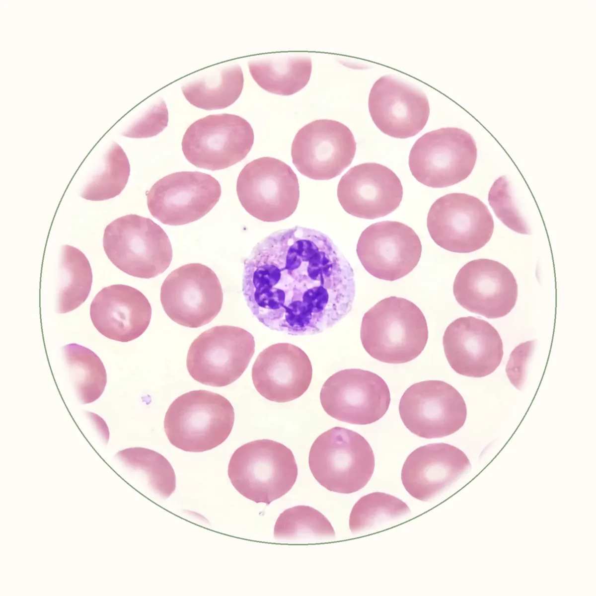
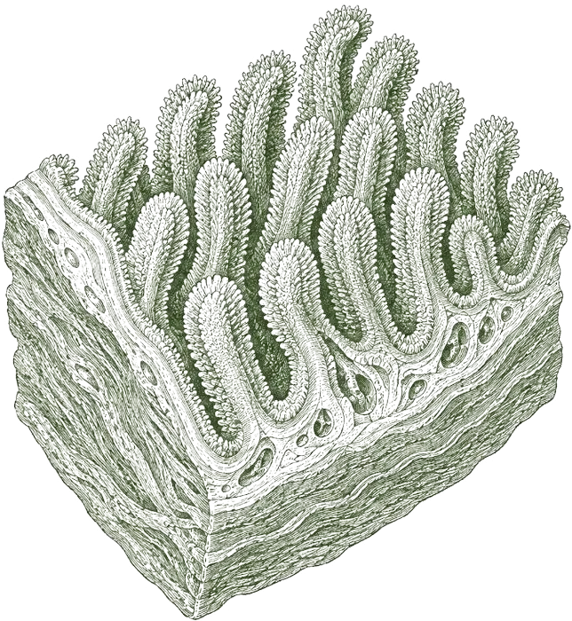

Enter the group or host to personalise the welcome screen, or leave it blank. It stays in this browser tab, and is stamped on any PDF you export.
Welcome,
Press → to continue

Blood smear, illustrative
Educational talk · 2026 · Barrie, ON
A women’s health talk from Optimal
Iron deficiency in women.
How we measure it, what it does, and how it’s treated.
Format
Group talk
Covers
Testing to treatment
Evidence
17 sources cited
Start at the base
Supplements sit at the top.
Get the base right first. They’re the last layer, not the first.
Nutraceuticals and additional supplements
Protein, carb and fat intake; goal-specific activity
Quantity of activity
Mental well-being
Adequate rest, caloric intake, hydration and safety
Zooming in
Today, one mineral.
Diet has six building blocks. This talk is about one mineral within them: iron.
Today
What we’ll cover.
4 parts
01
How we evaluate iron stores
Ferritin
02
Iron levels
What iron does
03
Consequences of high and low iron
The evidence
04
Treatment options
Pill, IV, diet
Part 1 of 4
How we evaluate iron stores.
How we evaluate
One test does the most.
A blood count picks up anemia. Ferritin tells us about your stores.
Reflects your stores
The best screening test for iron deficiency.
Not swayed by your last meal
Recent eating doesn’t change it.
Reads high with inflammation
It can look normal even when iron is low.
Source: Sholzberg et al., CMAJ 2025.
How we evaluate
Low iron isn’t always anemia.
38%
of nonpregnant females screened in Ontario had iron deficiency without anemia.
13%
had iron deficiency anemia.
Without anemia, a blood count is typically normal.
Source: Sholzberg et al., CMAJ 2025.
How we evaluate
Where the line moved.
In 2024, Canada’s largest community labs raised the lower limit of normal for ferritin.
Under 15
Flagged low by the old range.
15 to 30
Iron deficiency. Often missed before.
30 to 50
Possible deficiency. With inflammation, check transferrin saturation.
50 and up
The treatment target on oral iron.
Treatment is indicated
<50in pregnancy
<30in other adults
<20in children
Source: Sholzberg et al., CMAJ 2025.
How we evaluate
“Normal” is a statistic.
It describes the people tested
Not what your body needs.
The old sample wasn’t clean
It didn’t exclude people with iron deficiency.
Twice as common
Iron deficiency without anemia, compared with the 1.2 billion people who have iron deficiency anemia.
Source: Sholzberg et al., CMAJ 2025; Al-Naseem et al., Clin Med 2021. Curve is schematic.
Study · 2026
Move the line, find more women.
Ferritin lower limit, women
10 → 30
One US health system changed one number on the lab report. About 50,000 patients later, this is what changed.
Diagnosed with iron deficiency, ferritin under 30
○ Before● After
+47%
diagnoses of iron deficiency without anemia
+15%
oral iron prescriptions
+8.2
ng/mL ferritin at 3–6 months in women, vs +4.0 in men
Retrospective pre and post study. Abdelhay A, Reghis M, Salhab T, Jadhav N, Sholzberg M, Kouides P. Impact of optimizing the lower limit of normal for ferritin on iron deficiency diagnosis and treatment patterns: a pre and post-intervention study using EHR data. Am J Hematol 2026;101(3):439–446.
Part 2 of 4
Iron levels.
The jobs
Iron does the work. Ferritin holds it.
Oxygen transport and storage
Making blood cells (hematopoiesis)
Mitochondrial energy production
Energy metabolism
DNA synthesis
Myelination
Neurotransmitter synthesis
Cell growth, including bone-building osteoblasts
Ferritin
The store
The main iron-storage protein
A buffer for how much iron is available
Keeps iron usable and non-toxic
A marker of inflammation, which raises it
Study · 2026
Iron moves with your cycle.
Estrogen lowers hepcidin, the body’s iron gatekeeper. More iron let in.
Progesterone raises it. Less iron let in.
One result can mislead
Iron markers shift with cycle phase.
A prediction, not yet proof
Sampling across the cycle hasn’t confirmed the expected hepcidin peak.
Why perimenopause matters
When these hormones change, iron status can too.
Review. Curves are schematic. Balakirishnan D, Dukovski F, Bytheway H, Dugan C. Cyclical iron homeostasis: the role of sex hormones in female iron regulation. Front Biosci (Landmark Ed) 2026;31(9):54404.
Part 3 of 4
Too much, too little.
High iron
More isn’t better.
Inflammation can also raise ferritin, so a high result needs a closer look.
Clear in iron overload
Still being studied
Liver
The main store. Overload can scar it over time.
Heart
Severe overload can weaken the muscle.
Arteries
The link with cardiovascular disease is still debated.
Bone
Excess iron favours bone loss, especially after menopause.
Breast
A modest link with serum iron. Not shown for ferritin.
Source: EASL guidelines 2022; Ahanchi et al., Clin Nutr 2024; Correnti et al., Biomedicines 2026; Chang et al., BMC Cancer 2019.
Low iron
It can show up before anemia.
Iron deficiency without anemia
Iron deficiency anemia
General
Physical fatigue 83%, exhaustion, muscle weakness or pain, slower run times, poor sleep
Pallor 45–50%, fatigue 44%, muscular weakness
Neurological
Brain fog, low mood or irritability, poor memory and concentration, anxiety, depression, headaches, dizziness
Source: Sholzberg et al., CMAJ 2025. Adapted from Figure 1. Percentages are reported estimated prevalence.
Study · 2024
After menopause, stores climb.
Lower, then rising
Stores are lower than men’s before menopause, then rise during and after it.
Risk may climb too
Excess iron may add to cardiometabolic risk: more consistently type 2 diabetes than heart disease.
A link, not a cause
Most of this evidence is observational.
Review. Curves are schematic. Ahanchi NS, Khatami F, Llanaj E, et al. The complementary roles of iron and estrogen in menopausal differences in cardiometabolic outcomes. Clin Nutr 2024;43(5):1136–1150.
Iron’s impact on women
The evidence is mixed.
01
Low iron may matter beyond anemia, and earlier than current cut-offs.
02
Studies are small and cover limited periods of time.
03
Not enough to make strong recommendations for everyone.
04
Enough to explore further, as part of a multimodal approach.
Meta-analysis · 2025
Where iron was low, iron helped.
Randomized trials, no anemia. Effect size d
Short-term memory
0.53
Cognitive intelligence
0.46
Physical well-being
0.42
Anxiety
0.34
Fatigue
0.34
As a rule of thumb, d of
0.2 small0.5 medium0.8 large
Attention
No improvement
Depression
No improvement in randomized trials
18
studies, 12 of them randomized. 1,408 children, adolescents and menstruating adults.
No effect once iron-deficient participants were excluded.
Meta-analysis. Fiani D, Chahine S, Zaboube M, Solmi M, Powers JM, Calarge C. Psychiatric and cognitive outcomes of iron supplementation in non-anemic children, adolescents, and menstruating adults: a meta-analysis and systematic review. Neurosci Biobehav Rev 2025;178:106372.
Study · 2021
Symptoms appear above the old cut-off.
Ferritin
≤50
304 women, 54.9%
Restless legs
2.8 times the odds
Ferritin
≤20
103 women, 18.6%
Recent hair loss
2.3 times the odds. Also more limits from emotional problems.
Ferritin
≤15
60 women, 10.8%
Recent hair loss
2.2 times the odds
554 non-anemic menstruating women, aged 18–50. A correlation, measured at one point in time.
Cross-sectional study. Beatrix J, Piales C, Berland P, Marchiset E, Gerbaud L, Ruivard M. Non-anemic iron deficiency: correlations between symptoms and iron status parameters. Eur J Clin Nutr 2022;76(6):835–840.
Study · 2019
Same score. Three more minutes.
+3 min
Median extra time to finish the same intelligence test, with ferritin below 12.
Intelligence and anxiety scores
No difference between the groups.
Activity and endurance
Reported lower with low ferritin.
Brain activity
An EEG pattern linked with withdrawal tendencies.
23 non-anemic women, aged 20–32, in the follicular phase.
Small comparison study. Dziembowska I, Kwapisz J, Izdebski P, Żekanowska E. Mild iron deficiency may affect female endurance and behavior. Physiol Behav 2019;205:44–50.
Study · 2016
Better iron, better focus. Mostly.
127 non-anemic females, aged 18–35. A limited study.
Better with better iron
Attention
Faster reaction time
Inhibitory control
Steadier reaction time
Planning
Less time needed
No link
Several other executive functions
Possibly a performance ceiling
Unexpectedly worse
Working memory
Appeared to worsen with better iron status
Observational study. Scott SP, Murray-Kolb LE. Iron status is associated with performance on executive functioning tasks in nonanemic young women. J Nutr 2016;146(1):30–37.
Review · 2011
How low does iron have to go before it matters?
Who it affects most
Infants, children and women of reproductive age.
What to keep exploring
How iron interacts with cognition, emotions and behaviour.
Review. Murray-Kolb LE. Iron status and neuropsychological consequences in women of reproductive age: what do we know and where are we headed? J Nutr 2011;141(4):747S–755S.
Part 4 of 4
Treatment options.
Treatment
Pill or IV?
Oral iron
First line, including anemia with hemoglobin above 100
Hemoglobin improves in days to weeks
Ferritin improves in about 3–6 months
Treatment target: ferritin 50 or higher
Gut side effects are what make people stop.
IV iron
When oral iron can’t do the job
You can’t tolerate oral iron
A trial of oral iron hasn’t worked
Malabsorption, or severe anemia
Reactions are uncommon, about 1 in 200, and usually mild. Target: ferritin 100 or higher.
Source: Sholzberg et al., CMAJ 2025.
Dietary iron
Food alone won’t fix it.
An iron-rich diet helps alongside treatment. It won’t correct a deficiency by itself.
Heme iron
From animal sources. Better absorbed, and barely affected by what you eat with it.
Non-heme iron
From plants and fortified foods. Absorption depends heavily on what you eat with it.
20 mgof iron a day goes into making red blood cells.

Source: Sholzberg et al., CMAJ 2025; NIH Office of Dietary Supplements.
Treatment
Which iron?
The best one is the one you tolerate and take consistently.
Form
Elemental iron, per tablet
Per day
In short
First line: iron salts
Ferrous gluconate
35 mg
$0.10
May be better tolerated: less iron per tablet.
Ferrous sulfate
60 mg
$0.20
May be better tolerated than fumarate.
Ferrous fumarate
100 mg
$0.25
The most iron of the three, and may be harder on the gut.
Costlier, or more selective
Ferrous bisglycinate
25 mg
$0.30
Fewer gut effects in pregnancy trials. Less data elsewhere.
Polysaccharide complex
150 mg
$0.75
No robust evidence it works better than salts.
Ferric maltol
30 mg × 2
—
Prescription, if other oral iron fails or isn’t tolerated.
Source: Sholzberg et al., CMAJ 2025; Fischer et al., Nutr Rev 2023; Health Canada approval notice, 2024. Costs are CMAJ’s estimates. Ferric maltol isn’t in its table.
Recommendations
How to take it.
Each tablet contains
Ferrous sulfate300 mg
Elemental iron60 mg
01
Find the elemental iron dose
That’s the number that counts, not the size of the salt.
02
Aim for 60–110 mg elemental iron a day
As your clinician advises. Every other day may be gentler.
03
Take it on an empty stomach
Apart from calcium and magnesium, which interfere with absorption.
04
Take it with vitamin C
Common advice, though one trial found no added benefit.